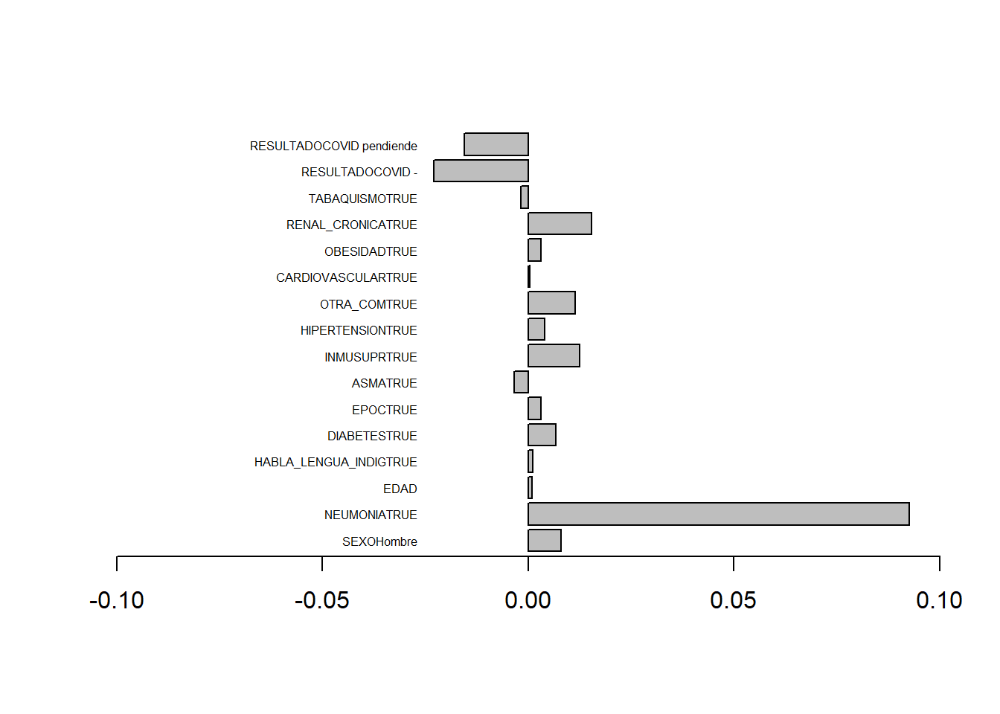
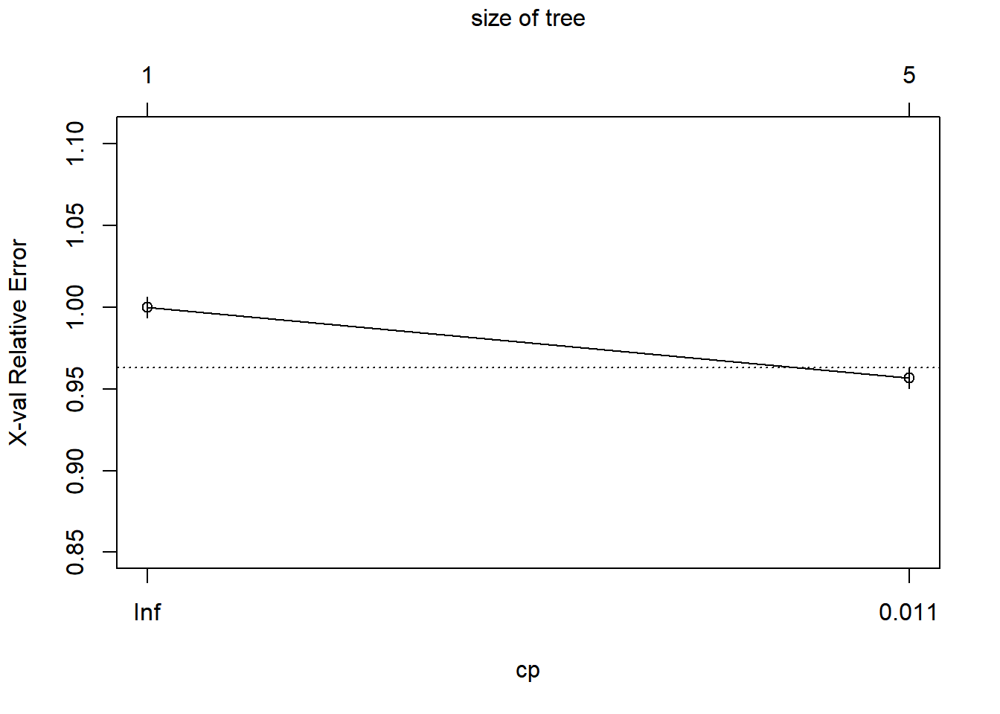
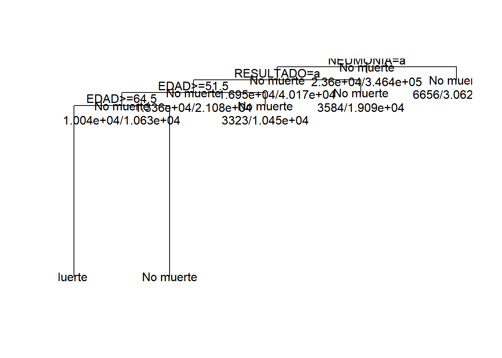
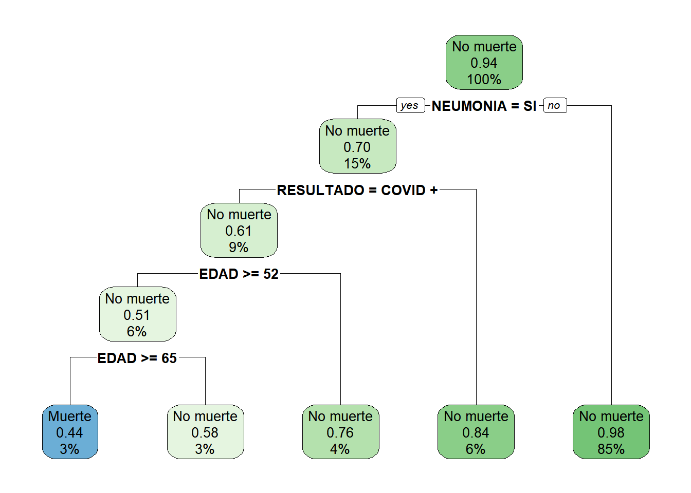
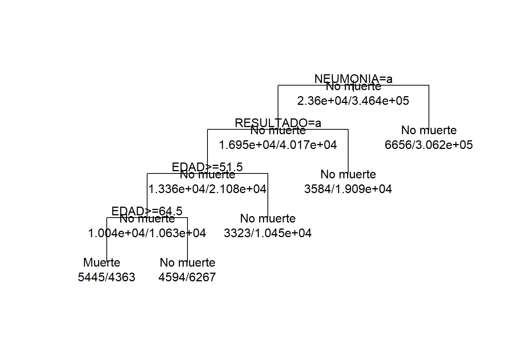

5 Clasificación
Pasos sugeridos
- Preparar la base de datos; base de entrenamiento (trainbd) y de testeo (testbd). 70/30
- Definir el modelo de clasificación * Regresión logística (logit) * Árbol de clasificación (CART) * Naive bayes
Base de datos, se empleara la base de datos de covid de México.
rm(list=ls())
library(dplyr)
covid<-read.csv("C:\\Users\\ALVARO\\Documents\\GitHub\\EST-384\\data\\covid_mx\\200627COVID19MEXICO.csv",sep=",",na.strings = c(99,98))
object.size(covid)/10^6## 123.5 bytesvv<-c("SEXO","FECHA_DEF","NEUMONIA","EDAD","HABLA_LENGUA_INDIG","DIABETES","EPOC","ASMA","INMUSUPR","HIPERTENSION","OTRA_COM","CARDIOVASCULAR","OBESIDAD","RENAL_CRONICA","TABAQUISMO","RESULTADO")
covid<-covid[,vv]
covid<-covid %>% filter(EDAD<=90)
#Descripción
Hmisc::describe(covid)## covid
##
## 16 Variables 549476 Observations
## ----------------------------------------------------
## SEXO
## n missing distinct Info Mean
## 549476 0 2 0.75 1.507
## Gmd
## 0.4999
##
## Value 1 2
## Frequency 270904 278572
## Proportion 0.493 0.507
## ----------------------------------------------------
## FECHA_DEF
## n missing distinct
## 549476 0 122
##
## lowest : 2020-01-13 2020-01-14 2020-01-15 2020-01-29 2020-01-30
## highest: 2020-06-24 2020-06-25 2020-06-26 2020-06-27 9999-99-99
## ----------------------------------------------------
## NEUMONIA
## n missing distinct Info Mean
## 549465 11 2 0.392 1.845
## Gmd
## 0.2615
##
## Value 1 2
## Frequency 84969 464496
## Proportion 0.155 0.845
## ----------------------------------------------------
## EDAD
## n missing distinct Info Mean
## 549476 0 91 1 42.45
## Gmd .05 .10 .25 .50
## 18.47 19 24 31 41
## .75 .90 .95
## 53 65 72
##
## lowest : 0 1 2 3 4, highest: 86 87 88 89 90
## ----------------------------------------------------
## HABLA_LENGUA_INDIG
## n missing distinct Info Mean
## 531854 17622 2 0.029 1.99
## Gmd
## 0.0196
##
## Value 1 2
## Frequency 5264 526590
## Proportion 0.01 0.99
## ----------------------------------------------------
## DIABETES
## n missing distinct Info Mean
## 547557 1919 2 0.328 1.875
## Gmd
## 0.2187
##
## Value 1 2
## Frequency 68437 479120
## Proportion 0.125 0.875
## ----------------------------------------------------
## EPOC
## n missing distinct Info Mean
## 547788 1688 2 0.047 1.984
## Gmd
## 0.03108
##
## Value 1 2
## Frequency 8650 539138
## Proportion 0.016 0.984
## ----------------------------------------------------
## ASMA
## n missing distinct Info Mean
## 547781 1695 2 0.093 1.968
## Gmd
## 0.06216
##
## Value 1 2
## Frequency 17589 530192
## Proportion 0.032 0.968
## ----------------------------------------------------
## INMUSUPR
## n missing distinct Info Mean
## 547565 1911 2 0.047 1.984
## Gmd
## 0.03133
##
## Value 1 2
## Frequency 8715 538850
## Proportion 0.016 0.984
## ----------------------------------------------------
## HIPERTENSION
## n missing distinct Info Mean
## 547713 1763 2 0.409 1.837
## Gmd
## 0.2724
##
## Value 1 2
## Frequency 89094 458619
## Proportion 0.163 0.837
## ----------------------------------------------------
## OTRA_COM
## n missing distinct Info Mean
## 546958 2518 2 0.088 1.97
## Gmd
## 0.05884
##
## Value 1 2
## Frequency 16596 530362
## Proportion 0.03 0.97
## ----------------------------------------------------
## CARDIOVASCULAR
## n missing distinct Info Mean
## 547716 1760 2 0.066 1.978
## Gmd
## 0.04372
##
## Value 1 2
## Frequency 12246 535470
## Proportion 0.022 0.978
## ----------------------------------------------------
## OBESIDAD
## n missing distinct Info Mean
## 547756 1720 2 0.411 1.836
## Gmd
## 0.274
##
## Value 1 2
## Frequency 89749 458007
## Proportion 0.164 0.836
## ----------------------------------------------------
## RENAL_CRONICA
## n missing distinct Info Mean
## 547749 1727 2 0.058 1.98
## Gmd
## 0.03897
##
## Value 1 2
## Frequency 10889 536860
## Proportion 0.02 0.98
## ----------------------------------------------------
## TABAQUISMO
## n missing distinct Info Mean
## 547637 1839 2 0.234 1.915
## Gmd
## 0.156
##
## Value 1 2
## Frequency 46713 500924
## Proportion 0.085 0.915
## ----------------------------------------------------
## RESULTADO
## n missing distinct Info Mean
## 549476 0 3 0.821 1.736
## Gmd
## 0.688
##
## Value 1 2 3
## Frequency 212222 270355 66899
## Proportion 0.386 0.492 0.122
## ----------------------------------------------------#variable muerte
covid$muerte<-(covid$FECHA_DEF!="9999-99-99")
covid<-covid %>% dplyr::select(-FECHA_DEF)
covid<-na.omit(covid)5.1 Logit Probit
- Se usa para realizar clasificaciones basadas en probabilidades
- Las clasificaciones son del tipo 1/0
- Existen variaciones para clasificar considerando más grupos, empleando el logit y probit ordenado.
5.1.1 Pasos
- Identificar la variable (1/0) que se requiere clasificar, definir covariables para construir el modelos
##
## FALSE TRUE
## 494841 33611##
## FALSE TRUE
## 0.93639725 0.06360275##################################################
#a factor
##################################################
#sexo
covid$SEXO<-factor(covid$SEXO,levels=1:2,labels=c("Mujer","Hombre"))
#resultado
covid$RESULTADO<-factor(covid$RESULTADO,levels = 1:3,labels=c("COVID +","COVID -","COVID pendiende"))
covid2<-covid#para cart
#si/no
aux<-c("NEUMONIA","HABLA_LENGUA_INDIG","DIABETES","EPOC","ASMA","INMUSUPR","HIPERTENSION","OTRA_COM","CARDIOVASCULAR","OBESIDAD","RENAL_CRONICA","TABAQUISMO")
for(i in aux){
covid[[i]]<-covid[[i]]==1
}
str(covid)## 'data.frame': 528452 obs. of 16 variables:
## $ SEXO : Factor w/ 2 levels "Mujer","Hombre": 2 2 2 2 2 1 2 1 2 2 ...
## $ NEUMONIA : logi FALSE FALSE TRUE FALSE FALSE FALSE ...
## $ EDAD : int 63 39 62 86 46 40 52 46 73 61 ...
## $ HABLA_LENGUA_INDIG: logi FALSE FALSE FALSE FALSE FALSE FALSE ...
## $ DIABETES : logi FALSE FALSE FALSE FALSE FALSE FALSE ...
## $ EPOC : logi FALSE FALSE FALSE FALSE FALSE FALSE ...
## $ ASMA : logi FALSE FALSE FALSE FALSE FALSE FALSE ...
## $ INMUSUPR : logi FALSE FALSE FALSE FALSE FALSE FALSE ...
## $ HIPERTENSION : logi TRUE FALSE FALSE TRUE FALSE FALSE ...
## $ OTRA_COM : logi FALSE FALSE FALSE FALSE TRUE FALSE ...
## $ CARDIOVASCULAR : logi FALSE FALSE FALSE FALSE FALSE FALSE ...
## $ OBESIDAD : logi TRUE FALSE FALSE FALSE FALSE FALSE ...
## $ RENAL_CRONICA : logi FALSE FALSE FALSE FALSE FALSE FALSE ...
## $ TABAQUISMO : logi FALSE TRUE FALSE FALSE FALSE FALSE ...
## $ RESULTADO : Factor w/ 3 levels "COVID +","COVID -",..: 1 1 1 1 1 1 1 1 1 1 ...
## $ muerte : logi FALSE FALSE TRUE TRUE FALSE FALSE ...
## - attr(*, "na.action")= 'omit' Named int [1:21024] 23 184 230 236 363 642 737 820 831 915 ...
## ..- attr(*, "names")= chr [1:21024] "23" "184" "230" "236" ...## Bases: trainbd, testbd
set.seed(123)
index = sample(1:2, nrow(covid), replace = TRUE, prob=c(0.7, 0.3))
prop.table(table(index))## index
## 1 2
## 0.7001544 0.2998456- Especificar el modelo (logit/probit)
- Identificar las variables significativas
- Construir el modelo con variables significativas
##
## Call:
## glm(formula = muerte ~ ., family = binomial(link = "logit"),
## data = trainbd)
##
## Deviance Residuals:
## Min 1Q Median 3Q Max
## -2.2988 -0.2468 -0.1466 -0.0944 3.8471
##
## Coefficients:
## Estimate Std. Error
## (Intercept) -6.0453094 0.0351339
## SEXOHombre 0.4528000 0.0167200
## NEUMONIATRUE 2.1601129 0.0166393
## EDAD 0.0503957 0.0005735
## HABLA_LENGUA_INDIGTRUE 0.1299336 0.0636812
## DIABETESTRUE 0.3568379 0.0185218
## EPOCTRUE 0.0606881 0.0396321
## ASMATRUE -0.2211289 0.0539182
## INMUSUPRTRUE 0.3809713 0.0467945
## HIPERTENSIONTRUE 0.1546319 0.0187518
## OTRA_COMTRUE 0.5776581 0.0358269
## CARDIOVASCULARTRUE -0.0544158 0.0376414
## OBESIDADTRUE 0.1697086 0.0194157
## RENAL_CRONICATRUE 0.7287407 0.0354132
## TABAQUISMOTRUE -0.0631770 0.0281778
## RESULTADOCOVID - -1.1795001 0.0193564
## RESULTADOCOVID pendiende -1.3541807 0.0317650
## z value Pr(>|z|)
## (Intercept) -172.065 < 2e-16 ***
## SEXOHombre 27.081 < 2e-16 ***
## NEUMONIATRUE 129.820 < 2e-16 ***
## EDAD 87.881 < 2e-16 ***
## HABLA_LENGUA_INDIGTRUE 2.040 0.0413 *
## DIABETESTRUE 19.266 < 2e-16 ***
## EPOCTRUE 1.531 0.1257
## ASMATRUE -4.101 4.11e-05 ***
## INMUSUPRTRUE 8.141 3.91e-16 ***
## HIPERTENSIONTRUE 8.246 < 2e-16 ***
## OTRA_COMTRUE 16.124 < 2e-16 ***
## CARDIOVASCULARTRUE -1.446 0.1483
## OBESIDADTRUE 8.741 < 2e-16 ***
## RENAL_CRONICATRUE 20.578 < 2e-16 ***
## TABAQUISMOTRUE -2.242 0.0250 *
## RESULTADOCOVID - -60.936 < 2e-16 ***
## RESULTADOCOVID pendiende -42.631 < 2e-16 ***
## ---
## Signif. codes:
## 0 '***' 0.001 '**' 0.01 '*' 0.05 '.' 0.1 ' ' 1
##
## (Dispersion parameter for binomial family taken to be 1)
##
## Null deviance: 175579 on 369997 degrees of freedom
## Residual deviance: 113042 on 369981 degrees of freedom
## AIC: 113076
##
## Number of Fisher Scoring iterations: 7## Start: AIC=113075.8
## muerte ~ SEXO + NEUMONIA + EDAD + HABLA_LENGUA_INDIG + DIABETES +
## EPOC + ASMA + INMUSUPR + HIPERTENSION + OTRA_COM + CARDIOVASCULAR +
## OBESIDAD + RENAL_CRONICA + TABAQUISMO + RESULTADO
##
## Df Deviance AIC
## <none> 113042 113076
## - CARDIOVASCULAR 1 113044 113076
## - EPOC 1 113044 113076
## - HABLA_LENGUA_INDIG 1 113046 113078
## - TABAQUISMO 1 113047 113079
## - ASMA 1 113059 113091
## - INMUSUPR 1 113105 113137
## - HIPERTENSION 1 113109 113141
## - OBESIDAD 1 113117 113149
## - OTRA_COM 1 113286 113318
## - DIABETES 1 113406 113438
## - RENAL_CRONICA 1 113445 113477
## - SEXO 1 113789 113821
## - RESULTADO 2 118350 118380
## - EDAD 1 121441 121473
## - NEUMONIA 1 131172 131204##
## Call:
## glm(formula = muerte ~ SEXO + NEUMONIA + EDAD + HABLA_LENGUA_INDIG +
## DIABETES + EPOC + ASMA + INMUSUPR + HIPERTENSION + OTRA_COM +
## CARDIOVASCULAR + OBESIDAD + RENAL_CRONICA + TABAQUISMO +
## RESULTADO, family = binomial(link = "logit"), data = trainbd)
##
## Deviance Residuals:
## Min 1Q Median 3Q Max
## -2.2988 -0.2468 -0.1466 -0.0944 3.8471
##
## Coefficients:
## Estimate Std. Error
## (Intercept) -6.0453094 0.0351339
## SEXOHombre 0.4528000 0.0167200
## NEUMONIATRUE 2.1601129 0.0166393
## EDAD 0.0503957 0.0005735
## HABLA_LENGUA_INDIGTRUE 0.1299336 0.0636812
## DIABETESTRUE 0.3568379 0.0185218
## EPOCTRUE 0.0606881 0.0396321
## ASMATRUE -0.2211289 0.0539182
## INMUSUPRTRUE 0.3809713 0.0467945
## HIPERTENSIONTRUE 0.1546319 0.0187518
## OTRA_COMTRUE 0.5776581 0.0358269
## CARDIOVASCULARTRUE -0.0544158 0.0376414
## OBESIDADTRUE 0.1697086 0.0194157
## RENAL_CRONICATRUE 0.7287407 0.0354132
## TABAQUISMOTRUE -0.0631770 0.0281778
## RESULTADOCOVID - -1.1795001 0.0193564
## RESULTADOCOVID pendiende -1.3541807 0.0317650
## z value Pr(>|z|)
## (Intercept) -172.065 < 2e-16 ***
## SEXOHombre 27.081 < 2e-16 ***
## NEUMONIATRUE 129.820 < 2e-16 ***
## EDAD 87.881 < 2e-16 ***
## HABLA_LENGUA_INDIGTRUE 2.040 0.0413 *
## DIABETESTRUE 19.266 < 2e-16 ***
## EPOCTRUE 1.531 0.1257
## ASMATRUE -4.101 4.11e-05 ***
## INMUSUPRTRUE 8.141 3.91e-16 ***
## HIPERTENSIONTRUE 8.246 < 2e-16 ***
## OTRA_COMTRUE 16.124 < 2e-16 ***
## CARDIOVASCULARTRUE -1.446 0.1483
## OBESIDADTRUE 8.741 < 2e-16 ***
## RENAL_CRONICATRUE 20.578 < 2e-16 ***
## TABAQUISMOTRUE -2.242 0.0250 *
## RESULTADOCOVID - -60.936 < 2e-16 ***
## RESULTADOCOVID pendiende -42.631 < 2e-16 ***
## ---
## Signif. codes:
## 0 '***' 0.001 '**' 0.01 '*' 0.05 '.' 0.1 ' ' 1
##
## (Dispersion parameter for binomial family taken to be 1)
##
## Null deviance: 175579 on 369997 degrees of freedom
## Residual deviance: 113042 on 369981 degrees of freedom
## AIC: 113076
##
## Number of Fisher Scoring iterations: 7- Predecir la clase de pertenencia en la base de test (\(prob>0.5\))
- Observar la clasificación dada en base a la probabilidad fijada
## clase
## FALSE TRUE
## 153984 4470- Comparar lo observado y lo predicho
## clase
## FALSE TRUE
## FALSE 146404 2041
## TRUE 7580 2429- Generar la matriz de confusión (librería caret)
##
## Attaching package: 'caret'## The following objects are masked from 'package:DescTools':
##
## MAE, RMSE## The following object is masked from 'package:vegan':
##
## tolerance## The following object is masked from 'package:survival':
##
## cluster## Confusion Matrix and Statistics
##
## clase
## FALSE TRUE
## FALSE 146404 2041
## TRUE 7580 2429
##
## Accuracy : 0.9393
## 95% CI : (0.9381, 0.9405)
## No Information Rate : 0.9718
## P-Value [Acc > NIR] : 1
##
## Kappa : 0.3086
##
## Mcnemar's Test P-Value : <2e-16
##
## Sensitivity : 0.9508
## Specificity : 0.5434
## Pos Pred Value : 0.9863
## Neg Pred Value : 0.2427
## Prevalence : 0.9718
## Detection Rate : 0.9240
## Detection Prevalence : 0.9368
## Balanced Accuracy : 0.7471
##
## 'Positive' Class : FALSE
## Efectos marginales
library(mfx)
info<-logitmfx(formula(m2),data=testbd)
barplot(info$mfxest[,1],horiz = T,las=1,cex.names = 0.5,xlim=c(-0.1,0.1),pos=-0.02)## Warning in plot.window(xlim, ylim, log = log, ...):
## "pos" is not a graphical parameter## Warning in title(main = main, sub = sub, xlab =
## xlab, ylab = ylab, ...): "pos" is not a graphical
## parameter
5.2 Arboles de clasificación (CART)
El método CART uso condiciones basadas en cortes sobre covariables para realizar la clasificación (predicción) de una clase. El proceso de clasificación comienza desde el nodo raíz del árbol; en cada nodo, el proceso verificará si el valor de entrada debe continuar de forma recursiva hacia la sub-rama derecha o izquierda de acuerdo con la condición de división, y se detiene al encontrar cualquier nodo hoja (terminal) del árbol de decisión.
5.2.1 Pasos
Crear el modelo de clasificación
- Cargar la librería rpart
- Usar la función rpart para construir el modelo de clasificación
covid2$muerte<-factor(covid2$muerte,c(T,F),labels = c("Muerte","No muerte"))
#si/no
aux<-c("NEUMONIA","HABLA_LENGUA_INDIG","DIABETES","EPOC","ASMA","INMUSUPR","HIPERTENSION","OTRA_COM","CARDIOVASCULAR","OBESIDAD","RENAL_CRONICA","TABAQUISMO")
for(i in aux){
covid2[[i]]<-factor(covid2[[i]],1:2,c("SI","NO"))
}
str(covid2)## 'data.frame': 528452 obs. of 16 variables:
## $ SEXO : Factor w/ 2 levels "Mujer","Hombre": 2 2 2 2 2 1 2 1 2 2 ...
## $ NEUMONIA : Factor w/ 2 levels "SI","NO": 2 2 1 2 2 2 2 2 2 2 ...
## $ EDAD : int 63 39 62 86 46 40 52 46 73 61 ...
## $ HABLA_LENGUA_INDIG: Factor w/ 2 levels "SI","NO": 2 2 2 2 2 2 2 2 2 2 ...
## $ DIABETES : Factor w/ 2 levels "SI","NO": 2 2 2 2 2 2 2 2 1 2 ...
## $ EPOC : Factor w/ 2 levels "SI","NO": 2 2 2 2 2 2 2 2 2 2 ...
## $ ASMA : Factor w/ 2 levels "SI","NO": 2 2 2 2 2 2 2 2 2 2 ...
## $ INMUSUPR : Factor w/ 2 levels "SI","NO": 2 2 2 2 2 2 2 2 2 2 ...
## $ HIPERTENSION : Factor w/ 2 levels "SI","NO": 1 2 2 1 2 2 2 2 2 2 ...
## $ OTRA_COM : Factor w/ 2 levels "SI","NO": 2 2 2 2 1 2 2 1 2 2 ...
## $ CARDIOVASCULAR : Factor w/ 2 levels "SI","NO": 2 2 2 2 2 2 2 1 2 2 ...
## $ OBESIDAD : Factor w/ 2 levels "SI","NO": 1 2 2 2 2 2 2 1 2 2 ...
## $ RENAL_CRONICA : Factor w/ 2 levels "SI","NO": 2 2 2 2 2 2 2 2 2 2 ...
## $ TABAQUISMO : Factor w/ 2 levels "SI","NO": 2 1 2 2 2 2 2 2 2 2 ...
## $ RESULTADO : Factor w/ 3 levels "COVID +","COVID -",..: 1 1 1 1 1 1 1 1 1 1 ...
## $ muerte : Factor w/ 2 levels "Muerte","No muerte": 2 2 1 1 2 2 2 2 2 2 ...
## - attr(*, "na.action")= 'omit' Named int [1:21024] 23 184 230 236 363 642 737 820 831 915 ...
## ..- attr(*, "names")= chr [1:21024] "23" "184" "230" "236" ...## Bases: trainbd, testbd
set.seed(123)
index = sample(1:2, nrow(covid2), replace = TRUE, prob=c(0.7, 0.3))
prop.table(table(index))## index
## 1 2
## 0.7001544 0.2998456- Explorar los nodos creados por rpart
## n= 369998
##
## node), split, n, loss, yval, (yprob)
## * denotes terminal node
##
## 1) root 369998 23602 No muerte (0.06378953 0.93621047)
## 2) NEUMONIA=SI 57116 16946 No muerte (0.29669445 0.70330555)
## 4) RESULTADO=COVID + 34442 13362 No muerte (0.38795656 0.61204344)
## 8) EDAD>=51.5 20669 10039 No muerte (0.48570323 0.51429677)
## 16) EDAD>=64.5 9808 4363 Muerte (0.55515905 0.44484095) *
## 17) EDAD< 64.5 10861 4594 No muerte (0.42298131 0.57701869) *
## 9) EDAD< 51.5 13773 3323 No muerte (0.24126915 0.75873085) *
## 5) RESULTADO=COVID -,COVID pendiende 22674 3584 No muerte (0.15806651 0.84193349) *
## 3) NEUMONIA=NO 312882 6656 No muerte (0.02127320 0.97872680) *- Examinar los parámetros del árbol con printcp
##
## Classification tree:
## rpart(formula = muerte ~ ., data = trainbd)
##
## Variables actually used in tree construction:
## [1] EDAD NEUMONIA RESULTADO
##
## Root node error: 23602/369998 = 0.06379
##
## n= 369998
##
## CP nsplit rel error xerror xstd
## 1 0.011461 0 1.00000 1.0000 0.0062981
## 2 0.010000 4 0.95416 0.9567 0.0061694- Usar el comando plotcp para explorar los parámetros de forma gráfica

- Usar la función summary para para examinar el modelo
## Call:
## rpart(formula = muerte ~ ., data = trainbd)
## n= 369998
##
## CP nsplit rel error xerror xstd
## 1 0.01146089 0 1.0000000 1.0000000 0.006298140
## 2 0.01000000 4 0.9541564 0.9566986 0.006169353
##
## Variable importance
## NEUMONIA RESULTADO EDAD
## 72 14 13
##
## Node number 1: 369998 observations, complexity param=0.01146089
## predicted class=No muerte expected loss=0.06378953 P(node) =1
## class counts: 23602 346396
## probabilities: 0.064 0.936
## left son=2 (57116 obs) right son=3 (312882 obs)
## Primary splits:
## NEUMONIA splits as LR, improve=7327.636, (0 missing)
## EDAD < 57.5 to the right, improve=3636.657, (0 missing)
## RESULTADO splits as LRR, improve=1662.835, (0 missing)
## DIABETES splits as LR, improve=1643.543, (0 missing)
## HIPERTENSION splits as LR, improve=1431.782, (0 missing)
##
## Node number 2: 57116 observations, complexity param=0.01146089
## predicted class=No muerte expected loss=0.2966944 P(node) =0.1543684
## class counts: 16946 40170
## probabilities: 0.297 0.703
## left son=4 (34442 obs) right son=5 (22674 obs)
## Primary splits:
## RESULTADO splits as LRR, improve=1445.2040, (0 missing)
## EDAD < 49.5 to the right, improve=1368.6730, (0 missing)
## HIPERTENSION splits as LR, improve= 357.6824, (0 missing)
## DIABETES splits as LR, improve= 303.1878, (0 missing)
## SEXO splits as RL, improve= 104.5722, (0 missing)
## Surrogate splits:
## EDAD < 30.5 to the right, agree=0.631, adj=0.072, (0 split)
## INMUSUPR splits as RL, agree=0.609, adj=0.015, (0 split)
## OTRA_COM splits as RL, agree=0.607, adj=0.010, (0 split)
## EPOC splits as RL, agree=0.604, adj=0.002, (0 split)
## CARDIOVASCULAR splits as RL, agree=0.604, adj=0.002, (0 split)
##
## Node number 3: 312882 observations
## predicted class=No muerte expected loss=0.0212732 P(node) =0.8456316
## class counts: 6656 306226
## probabilities: 0.021 0.979
##
## Node number 4: 34442 observations, complexity param=0.01146089
## predicted class=No muerte expected loss=0.3879566 P(node) =0.09308699
## class counts: 13362 21080
## probabilities: 0.388 0.612
## left son=8 (20669 obs) right son=9 (13773 obs)
## Primary splits:
## EDAD < 51.5 to the right, improve=987.67290, (0 missing)
## HIPERTENSION splits as LR, improve=276.65030, (0 missing)
## DIABETES splits as LR, improve=194.20950, (0 missing)
## RENAL_CRONICA splits as LR, improve= 89.58991, (0 missing)
## EPOC splits as LR, improve= 51.97436, (0 missing)
##
## Node number 5: 22674 observations
## predicted class=No muerte expected loss=0.1580665 P(node) =0.06128141
## class counts: 3584 19090
## probabilities: 0.158 0.842
##
## Node number 8: 20669 observations, complexity param=0.01146089
## predicted class=No muerte expected loss=0.4857032 P(node) =0.05586246
## class counts: 10039 10630
## probabilities: 0.486 0.514
## left son=16 (9808 obs) right son=17 (10861 obs)
## Primary splits:
## EDAD < 64.5 to the right, improve=180.08500, (0 missing)
## SEXO splits as RL, improve= 26.65526, (0 missing)
## RENAL_CRONICA splits as LR, improve= 23.86824, (0 missing)
## HIPERTENSION splits as LR, improve= 20.12766, (0 missing)
## DIABETES splits as LR, improve= 13.55075, (0 missing)
## Surrogate splits:
## HIPERTENSION splits as LR, agree=0.573, adj=0.100, (0 split)
## EPOC splits as LR, agree=0.547, adj=0.044, (0 split)
## CARDIOVASCULAR splits as LR, agree=0.543, adj=0.037, (0 split)
## OTRA_COM splits as LR, agree=0.531, adj=0.011, (0 split)
## RENAL_CRONICA splits as LR, agree=0.529, adj=0.007, (0 split)
##
## Node number 9: 13773 observations
## predicted class=No muerte expected loss=0.2412691 P(node) =0.03722453
## class counts: 3323 10450
## probabilities: 0.241 0.759
##
## Node number 16: 9808 observations
## predicted class=Muerte expected loss=0.4448409 P(node) =0.02650825
## class counts: 5445 4363
## probabilities: 0.555 0.445
##
## Node number 17: 10861 observations
## predicted class=No muerte expected loss=0.4229813 P(node) =0.02935421
## class counts: 4594 6267
## probabilities: 0.423 0.577Visualizar el árbol
- Usar la función plot y text(,all=T, n=T)


- Ajustes en el layout plot(…,uniform=TRUE, branch=0.6, margin=0.1)

Predicción de la clasificación
- predict(…, testbd, type=“class”), predicción sobre la base de test
- Elaborar una tabla de contingencia de la clasificación
##
## clase Muerte No muerte
## Muerte 2405 1862
## No muerte 7604 146583- Emplear el comando confusionMatrix sobre la tabla del paso anterior, para evaluar la calidad de la clasificación. Mcnemar’s Test H0: \(ij=ji\)
## Confusion Matrix and Statistics
##
##
## clase Muerte No muerte
## Muerte 2405 1862
## No muerte 7604 146583
##
## Accuracy : 0.9403
## 95% CI : (0.9391, 0.9414)
## No Information Rate : 0.9368
## P-Value [Acc > NIR] : 8.06e-09
##
## Kappa : 0.3109
##
## Mcnemar's Test P-Value : < 2.2e-16
##
## Sensitivity : 0.24028
## Specificity : 0.98746
## Pos Pred Value : 0.56363
## Neg Pred Value : 0.95068
## Prevalence : 0.06317
## Detection Rate : 0.01518
## Detection Prevalence : 0.02693
## Balanced Accuracy : 0.61387
##
## 'Positive' Class : Muerte
## 5.2.2 Proceso de pruning (podado)
El objetivo es eliminar variables redundantes y crear un modelo de clasificación mas robusto
Pasos:
- Encuentre el valor mínimo en cross-validation error. (xerror)
## [1] 0.9566986- Encontrar el registro que contiene el valor del anterior paso. (which.min, cptable)
## 2
## 2- Obtenga el “cost complexity parameter” del valor mínimo encontrado (CP)
- Realizar el podado con la función prune, empleando el modelo original y el CP del valor mínimo en xerror (paso anterior)
- Visualice el nuevo árbol
- Realice la predicción a partir del árbol podado
- Evalúe los resultados con la matriz de confusión
## Confusion Matrix and Statistics
##
##
## clase Muerte No muerte
## Muerte 2405 1862
## No muerte 7604 146583
##
## Accuracy : 0.9403
## 95% CI : (0.9391, 0.9414)
## No Information Rate : 0.9368
## P-Value [Acc > NIR] : 8.06e-09
##
## Kappa : 0.3109
##
## Mcnemar's Test P-Value : < 2.2e-16
##
## Sensitivity : 0.24028
## Specificity : 0.98746
## Pos Pred Value : 0.56363
## Neg Pred Value : 0.95068
## Prevalence : 0.06317
## Detection Rate : 0.01518
## Detection Prevalence : 0.02693
## Balanced Accuracy : 0.61387
##
## 'Positive' Class : Muerte
## 5.3 Naive Bayes
Es un modelo basado en probabilidad, su base teórica aplica el teorema de Bayes (fuerte supuesto de independencia).
nota
\[P(muerte/edad,neumonia, ...)<>P(\sim muerte/edad,neumonia,...)\]
\[P(C/X)=\frac{P(C)*P(X/C)}{P(X)}\] * \(P(C/X)\) Probabilidad Posterior * \(P(C)\) Probabilidad a Priori * \(P(X/C)\) Verosimilitud * \(P(X)\) Marginal
Si se tiene varios predictores (\(X\)) se supone independencia, esto es:
\[P(C/X) = \frac{P(X_1/C)*P(X_2/C)*\ldots *P(X_n/C)*P(C)}{P(X)}\] Pasos,
- Cargar la librería e1071 y emplear la función naiveBayes para construir el clasificador
##
## Attaching package: 'e1071'## The following object is masked from 'package:Hmisc':
##
## impute- Explorar los resultados
##
## Naive Bayes Classifier for Discrete Predictors
##
## Call:
## naiveBayes.default(x = X, y = Y, laplace = laplace)
##
## A-priori probabilities:
## Y
## Muerte No muerte
## 0.06378953 0.93621047
##
## Conditional probabilities:
## SEXO
## Y Mujer Hombre
## Muerte 0.3513685 0.6486315
## No muerte 0.5045959 0.4954041
##
## NEUMONIA
## Y SI NO
## Muerte 0.7179900 0.2820100
## No muerte 0.1159655 0.8840345
##
## EDAD
## Y [,1] [,2]
## Muerte 60.42543 15.03884
## No muerte 41.26280 15.78475
##
## HABLA_LENGUA_INDIG
## Y SI NO
## Muerte 0.017710364 0.982289636
## No muerte 0.009295719 0.990704281
##
## DIABETES
## Y SI NO
## Muerte 0.3705618 0.6294382
## No muerte 0.1089822 0.8910178
##
## EPOC
## Y SI NO
## Muerte 0.05448691 0.94551309
## No muerte 0.01310927 0.98689073
##
## ASMA
## Y SI NO
## Muerte 0.02076095 0.97923905
## No muerte 0.03311239 0.96688761
##
## INMUSUPR
## Y SI NO
## Muerte 0.03694602 0.96305398
## No muerte 0.01450074 0.98549926
##
## HIPERTENSION
## Y SI NO
## Muerte 0.4184815 0.5815185
## No muerte 0.1461045 0.8538955
##
## OTRA_COM
## Y SI NO
## Muerte 0.06448606 0.93551394
## No muerte 0.02853670 0.97146330
##
## CARDIOVASCULAR
## Y SI NO
## Muerte 0.05982544 0.94017456
## No muerte 0.01967113 0.98032887
##
## OBESIDAD
## Y SI NO
## Muerte 0.232904 0.767096
## No muerte 0.159589 0.840411
##
## RENAL_CRONICA
## Y SI NO
## Muerte 0.07825608 0.92174392
## No muerte 0.01579695 0.98420305
##
## TABAQUISMO
## Y SI NO
## Muerte 0.09397509 0.90602491
## No muerte 0.08496345 0.91503655
##
## RESULTADO
## Y COVID + COVID - COVID pendiende
## Muerte 0.74934328 0.19455978 0.05609694
## No muerte 0.36267162 0.51143200 0.12589637- Predecir los resultados en la base de testeo
- Realizar la matriz de confusión
## Confusion Matrix and Statistics
##
##
## clase Muerte No muerte
## Muerte 5261 8124
## No muerte 4748 140321
##
## Accuracy : 0.9188
## 95% CI : (0.9174, 0.9201)
## No Information Rate : 0.9368
## P-Value [Acc > NIR] : 1
##
## Kappa : 0.4069
##
## Mcnemar's Test P-Value : <2e-16
##
## Sensitivity : 0.52563
## Specificity : 0.94527
## Pos Pred Value : 0.39305
## Neg Pred Value : 0.96727
## Prevalence : 0.06317
## Detection Rate : 0.03320
## Detection Prevalence : 0.08447
## Balanced Accuracy : 0.73545
##
## 'Positive' Class : Muerte
## 5.4 Ejercicios.
- Usando la ENDSA para un año en particular, defina clases de violencia en base a las variables de violencia y aplique los métodos de clasificación con las variables que considere relevante.
- Usando la Encuesta a hogares, para la clase nivel de educación (ninguno, primaria, secundaria, superior) aplique los métodos de clasificación considerando las variables relevantes.